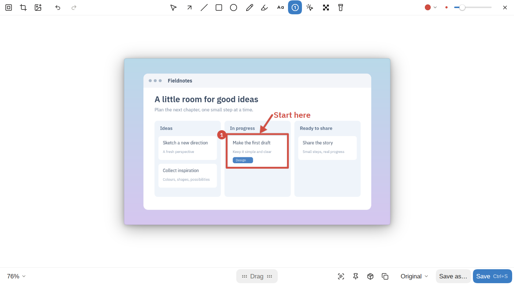
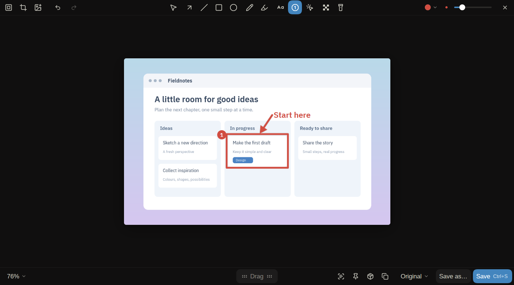
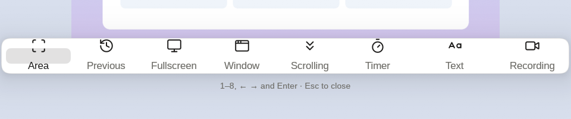
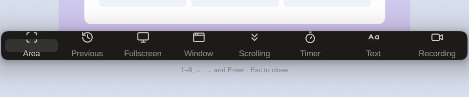

Screenshots and screen recording for the desktop
kadr takes screenshots and records the screen. Capture an area, a window or the screen, annotate it, record with your camera and clicks, and turn a recording into a polished video. Written in Rust on GPUI CE. Made first for Linux on Omarchy (Arch, Hyprland, Wayland), coming to macOS and Windows. English and Russian; dark and light themes follow the system.
Download Linux, macOS and Windows. Alpha.


This manual says what kadr does today, screen by screen. Each page has the same shape: what the screen is for, how to open it, what's on it, its keys, the settings that change it and the commands that start it. What changed between versions is in the changelog; where the project is going is the roadmap.
 
Pages
- Install: the builds, what kadr needs on each system, the Hyprland hook.
- Capture: the capture bar, picking an area, window and screen shots, scrolling shots, the self-timer, the card after a capture, pinning, text recognition.
- Editor: annotating a screenshot: tools, text styles, hiding, crop, backgrounds, presets, saving.
- Recording: the recording bar, the microphone and system audio, the camera bubble, studio mode, trimming and GIFs.
- Studio: turning a recording into a video: zooms, cuts, the cursor, the camera, export.
- History: every capture, with search and filters.
- Settings: the settings window, hotkeys and the
settings.tomlfile. - Project files:
.kadrfiles that keep an edit. - Command line: every
kadrcommand. - Glossary: the words this manual and kadr use.
Platforms
- Linux (Wayland, Hyprland): everything works, and this is where kadr is used every day.
- macOS and Windows: the editor, the studio, screenshots (window and scrolling shots too), recording through the system's capture, the clipboard, notifications, the tray, global hotkeys and the area overlay are written and pass the end-to-end test on CI's runners. The camera, choosing a microphone and the studio's click and key log aren't ported yet, and nobody has run kadr on a real machine there: testers are very welcome.
For AI assistants
The whole manual is one plain-text file: llms-full.txt. Give its address to an assistant and it knows every screen, key and setting. llms.txt is the short index, and every page has a Markdown copy: /editor.md for the editor's.
Help
Bugs and questions go to GitHub issues. A crash leaves crash.log in kadr's cache folder; attach it. Developers start at CONTRIBUTING.md.